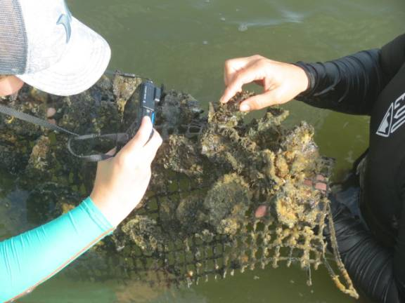

Living Dock; Oysters Cleaning Water Around our Docks
Since BW residents last spring attached about 5,000 blank oyster shells to our dock pilings in hopes of catching oyster spat (seeds) to begin a colony of water filtering oysters, FIT scientists have been keeping an eye on their growth. Their recent census revealed 5 to 10 new oyster recruits attached to each of the two or three mats wrapped around the pilings. These juveniles will become fully functional adult water filters in 18 to 36 months after catching on. Additional species on the pilings also will aid with cleansing the water.

IMG 8465 Dr. Kelli Hunsucker (right) and FIT graduate student Morgan pointing out one of the larger – up to 2 inches – new oysters.
Otters
have been seen near the docks. Hmmm? Are they also counting oysters?
BW Board
Meeting Our Board of
Directors have a scheduled Thursday meeting 7 PM, November 14 at the
clubhouse. A couple of day prior to the meeting, an agenda will be posted on
the bulletin board.
BW
Communications Committee BW Director
Chuck Least requested the following be sent to you:
We are looking
for people who are committed to increasing quality communication within the
Beach Woods POA. If you have a desire to make things better and can place
yourself on a range of experience from e-user to web and information manager,
you would be a valuable addition.
BW Website
improvement is a large part of what we will do, however the committee will also
address our capability to communicate in all forms from paper to electronic.
Please email Chuck Least at “cleast@rochester.rr.com” with a short description
of your interest or simply to discuss the new committee. Thank you.
BW
Activities Holiday Party Friday, December 6,
starting at 5:30 PM. Brought to you by the Social Activities Committee. To
reserve a place at the party, sign up and pay in the BW office – $20 per person
for hot and cold hors d'oeuvre, DJ and dancing, door prizes and 50/50 raffle.
BYOB.
BW Losses Notices have
been posted about the passing of two members of our BW community: Agnes Crowley
and Lucille Hoffman.
BW Nature
Corner Butterfly
Garden.
Thanks to the Landscape Committee, we now have a second butterfly garden at the
south entrance gate. And it his been working, offering a buffet worthy of a
monarch (butterfly). Two other species of butterfly (along with bees and wasps)
have been seen feasting. The original butterfly garden is in the park at the
west end of River Woods Blvd. IMG 8481 In the center of the photo a
Cassius blue butterfly at new BW butterfly garden. This tiny (small coin size)
butterfly has a light blue hue when flying and is difficult to locate when it
lands.
Land Turtles. The sea turtle season
is ended, probably on a happy note with the larger number of Momma Turtle
landings and baby turtles hatching. Now let's pay attention to the wandering
land turtles (tortoises) crossing A1A. (On a jog south to The Cove Restaurant,
I saw two on the road and four more along the paved bike path. After the
traffic both ways had stopped, I helped one of them across to its new “pasture”
– the only time I may safely play in traffic.)
Beach
Renourishment. Now that sea turtle season has passed (almost), beach
renourishment will begin soon, but not until after Dec. 1. The delay this year
is to allow for late baby green turtles to hatch. The ocean front at BW will be
renourished from sand being stockpiled south of us.
The pipes and
equipment staged on county property adjacent to Spessard Holland Beach Park are
for a dredging project north of Spessard Holland, a project distinct from the
trucked-in sand the beach at BW will receive. (This summary thanks to Mike at
Bervard County's Dept. of Natural Resources.)
Liter Patrol – You. Rather than escorting turtles across the road, you can help keep our
roadway clean by occasionally carrying a plastic bag – and perhaps gloves – on
your walks to pick up the larger chunks of trash and recyclables. The same can
be encouraged for your beach walks. (Apologies for this opinion piece – or
public service announcement.)
Another
Facebook Site “Friends of Melbourne Beach”. (Thanks to
Chuck Southcomb.)
Local
Community Events ·
Melbourne Municipal Band, Melbourne Auditorium. Free concert Songs
of the Season December 11 & 12. Preshow begins at 6:30 PM. (www.mmband.org) ·
Melbourne Community Orchestra, Melbourne Auditorium. Free concert Holiday
Celebrations December 4 & 5. Begins at 7:30 PM. (www.mcorchestra.org) ·
Ruth Funk Center for Textile Arts (Fla. Inst. of Tech). Free exhibition
“Basketry in America” covers basketry from its origins to the contemporary art
and new, unusual materials for baskets. (www.textiles.fit.edu)
·
Gem Show, Melbourne Auditorium. Annual
Jewelry & Gem Christmas Gift Show November 9 & 10 from 10 AM to 5 PM.
Proceeds from entrance donation ($5) and purchased gifts and lapidary and
beading materials provide scholarships for Earth Sciences. (www.canaveral-mgs.com) ·
Gentle Exercise/Balance Classes. At Melbourne Beach Library 9:30 to 10:30
each Friday. $5 for each session. ·
Exercise Note. Indoor exercise programs in our BW clubhouse may not begin
until Jan. 2020. Traffic Safety –
Pedestrians and Cyclists As winter
approaches, decreasing daylight combined with our limited sidewalks in BW --
especially on the main entrance road River Woods Blvd. – potentially can be
disastrous. A few guidelines might be helpful for walkers and cyclists – as
well as for the drivers – after dark. (Another public service announcement
slipped in.) ·
Walk on the left facing traffic so you can see oncoming vehicles.
Pedestrians on the right lane may never hear them. Newer cars (especially
electric ones) are very quiet and walkers may not hear them approaching from
the rear. ·
Pedestrians with leashed dogs need to be aware of how far their pets
may wander, especially if they are on the right lane and a silent car is
passing. ·
The same warning/advice applies to walking with children –
probably not on a leash. ·
Nighttime walkers and cyclists should wear light/bright colored
clothing for visibility. Walkers may want to step onto the grass when a
vehicle approaches as walkers may not be visible. ·
Also suggest nighttime walkers carry a flashlight to turn
on when a vehicle nears. Bicycles should have operating lights, front and back. ·
Report street lamp outages to the office. ·
Report vehicle speeding to the office. It's easy to be
safe. Just need to be aware, to think about it.
The Beach Woods Board of Directors has approved the creation of The Beach Woods
Communication committee. Chuck Least will help organize the new committee and
will serve as the Liaison to the BOD.